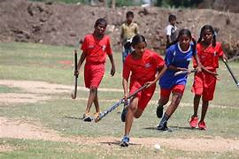

ASV Hockey Academy

The genesis of the Hockey Academy at Ananthapuram Sports Village (ASV) traces back to 2007 when it was inaugurated to nurture young male talents. Subsequently, in 2010, recognizing the need for inclusivity, the academy expanded its embrace to include aspiring female hockey players. Anchored by a commitment to excellence, the academy boasts quality infrastructure, featuring two full-sized gravel hockey grounds, an office space, and storage facilities. This dedicated space serves as the canvas upon which the dreams and skills of budding hockey enthusiasts are crafted.
Ensuring the seamless transfer of knowledge and expertise, the academy is fortified by a team of two adept instructors who guide and coach the students. Beyond the boundaries of conventional coaching, these mentors play a pivotal role in instilling values of teamwork, discipline, and sportsmanship in the young athletes under their tutelage. The impact of the Hockey Academy is vividly illustrated by the notable achievements of its coached students. A proud testament to the success of the program, 22 boys have not only participated but excelled at national and state-level championships, signaling the academy's efficacy in honing top-tier talent.
Presently, the Hockey Academy stands as a dynamic ecosystem where 30 boys and 30 girls receive high-performance coaching. These dedicated young athletes are immersed in a transformative journey, participating in age-specific categories such as Under-12, Under-14, and Under-17. The strategic categorization ensures that the coaching is tailored to the specific needs and developmental stages of the players, optimizing their growth and progression within the sport. The academy transcends the traditional boundaries of sports training, aiming to mold individuals who not only exhibit prowess on the hockey field but also carry the values instilled by the sport into their broader lives. Education is interwoven into the fabric of their developmental journey, ensuring that each participant receives the tools to navigate the multifaceted challenges of life beyond sports.